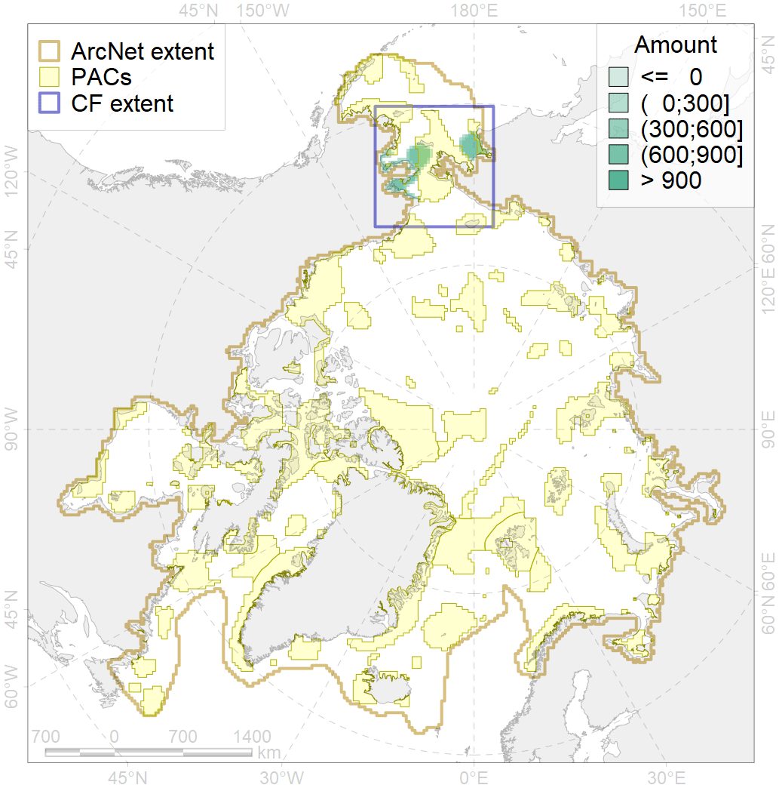
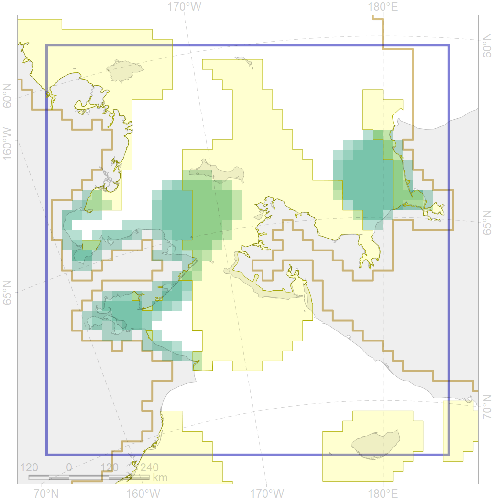

2040

| CF code | 2040 |
| CF name | Ringed seal molting areas in the Bering Sea |
| Time Period | 1988 |
| Source(s) | NOAA 1988 |
| Seasonality | May-June |
| Depth Horizon | 0-400 m |
| Methodology | Data compilation, expert input |
| Use Restrictions | Open source |
| Author Name | Irina Trukhanova |
| Notes | |
| Scenario’s Target | 0.24 |
| Target Achievement | 0.316 (Scenario: 131.7%) |
| PAC | Share of the Total Amount within the PAC | Share of the Target Achievement for the ArcNet | PAC’s Contribution to the Target Achievement |
|---|---|---|---|
| 3 | 1.8%2.6% | 3.8%3.9% | 2.9%3.0% |
| 4 | 7.9%8.9% | 23.4%27.1% | 17.8%20.6% |
| 5 | 23.2%23.5% | 82.6%83.4% | 62.7%63.3% |
| 6 | 0.4%1.0% | 1.9%4.3% | 1.4%3.3% |
| inner | 33.3%36.0% | 111.7%118.8% | 84.8%90.2% |
| outer | 66.7%76.0% | 20.1%46.0% | 15.2%34.9% |
| † supplement values are for area consistence whereas principal values are for Accenter compatible gridded stats |